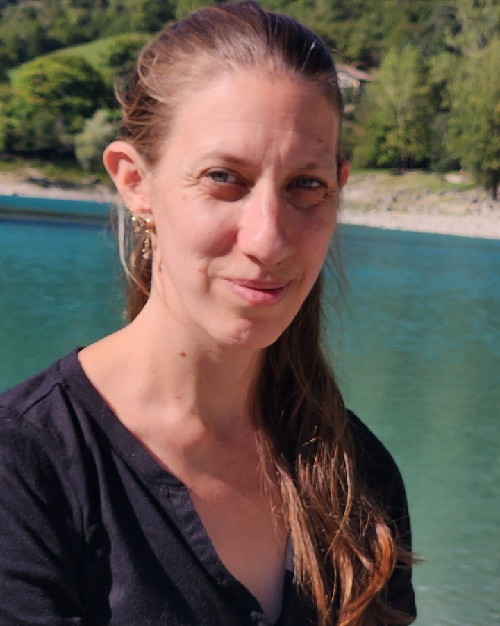
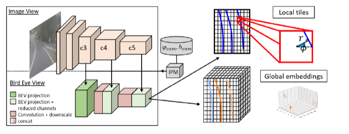
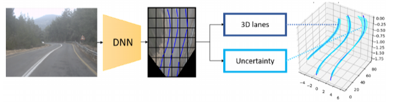
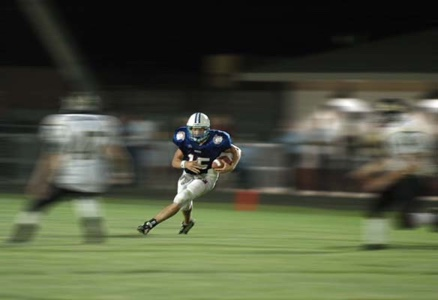
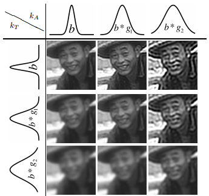

Netalee Efrat

I am a Senior Applied Scientist at Amazon Prime Video, where I work on generative models and 3D reconstruction for live sports (Prime 360).
Previously, I was a Staff Engineer at the General Motors Advanced Technical Center in Israel, working on camera-based road perception for autonomous driving.
I received my Ph.D. in Computer Science from the Weizmann Institute of Science, advised by Prof. Michal Irani and Prof. Anat Levin.
My research interests include computer vision, generative models, 3D reconstruction and computational photography.
Publications
2026
-
MACRO: Training-free Multi-plane Attention for Closeup Render Optimization
-
Splatent: Splatting Diffusion Latents for Novel View Synthesis
2020
-

3D-LaneNet+: Anchor Free Lane Detection using a Semi-Local Representation -

Semi-Local 3D Lane Detection and Uncertainty Estimation
2017
-

2016
-
Cinema 3D: Large Scale Automultiscopic DisplayACM Transactions on Graphics 35(4)
2013
-

Accurate Blur Models vs. Image Priors in Single Image Super-Resolution
Thesis
- Beyond the Limitations of Sensors and Displays
Ph.D. thesis, Weizmann Institute of Science, 2018. Advisors: Anat Levin and Michal Irani.
Patents
- Method and apparatus for lane detection on a vehicle travel surface
N. Efrat Sela, M. Bluvstein, D. Levi, N. Garnett, B. E. Shlomo. US Patent 11,731,639, 2023. - System and process for end to end prediction of lane detection uncertainty
N. Efrat Sela, M. Bluvstein, B. E. Shlomo. US Patent 11,390,286, 2022.